Bavul Kasabası erken erişimde: oyun düzenli olarak büyüyor. Son yenilikler burada.
Bavul Kasabası'nın en büyük güncellemesi Apple incelemesinde; onaylanınca App Store'dan güncelleyebilirsin. Kareler oyunun 1.0 sürümünden.
Gölge İmparatoru yenildi; ama o yalnızca bir kuklaydı. Gökyüzü yırtıldı ve Odo'nun kayıp bavulları karanlığa bürünmüş hâlde ortaya çıktı. Köşk artık bir gemi; yola çıkıyoruz!
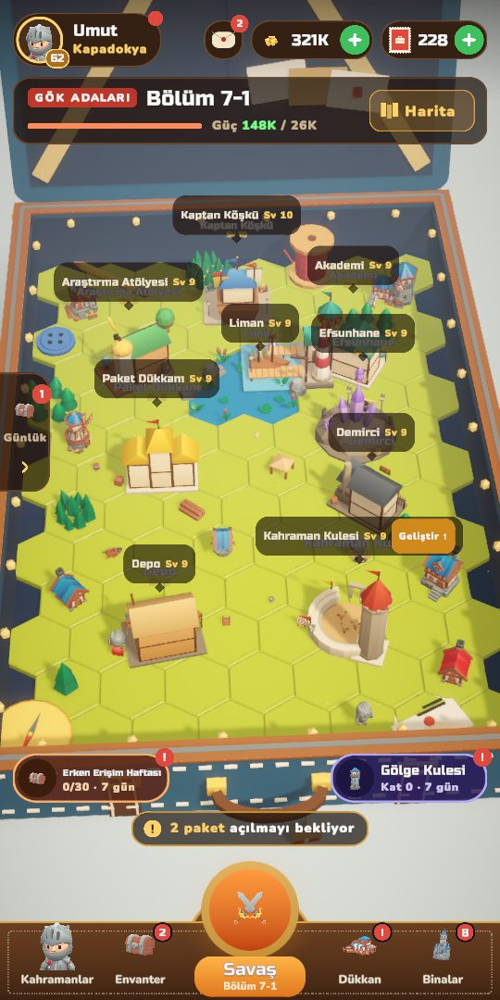
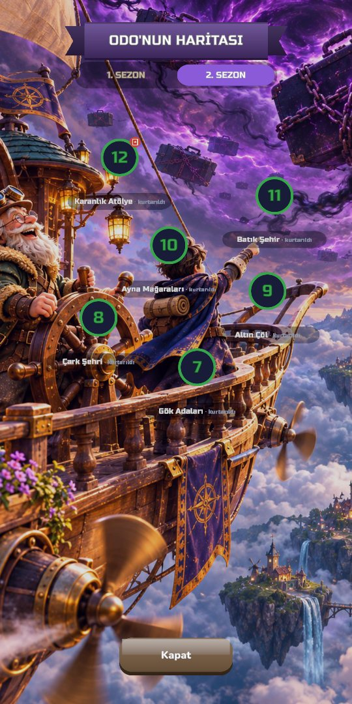
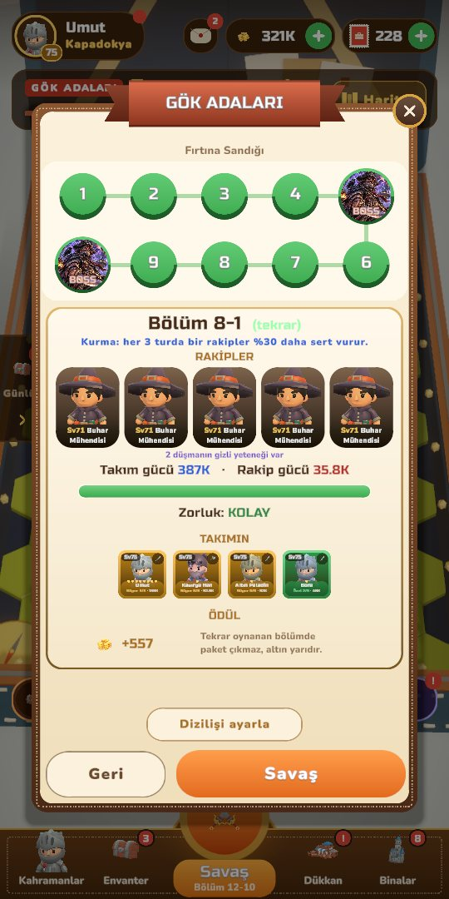
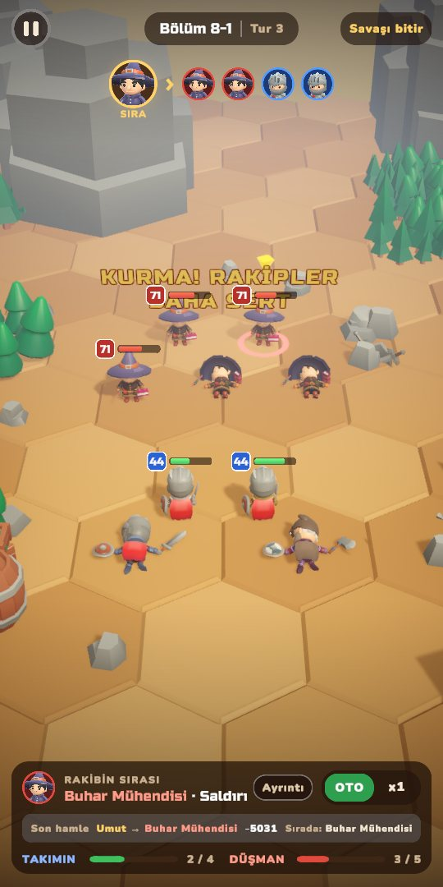
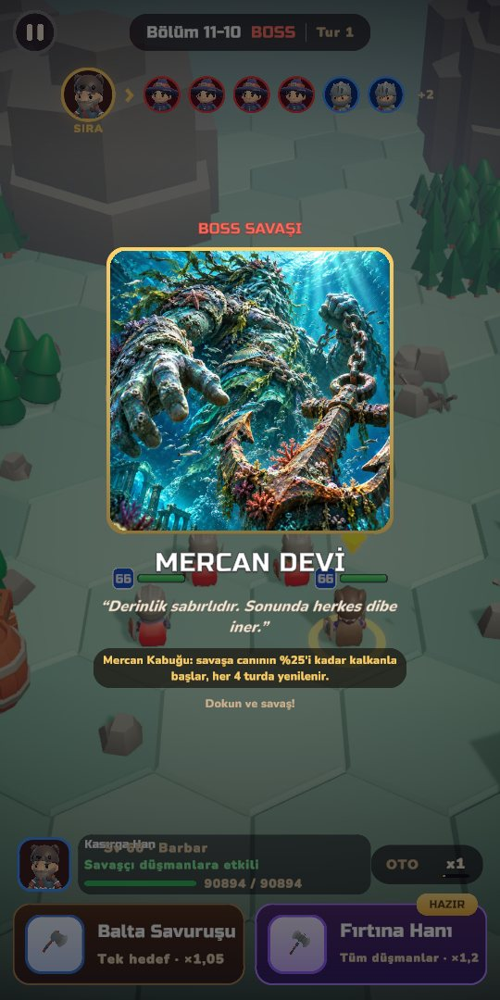
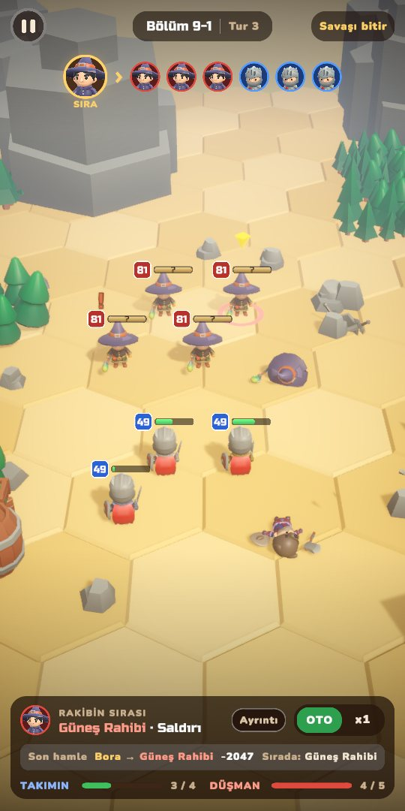
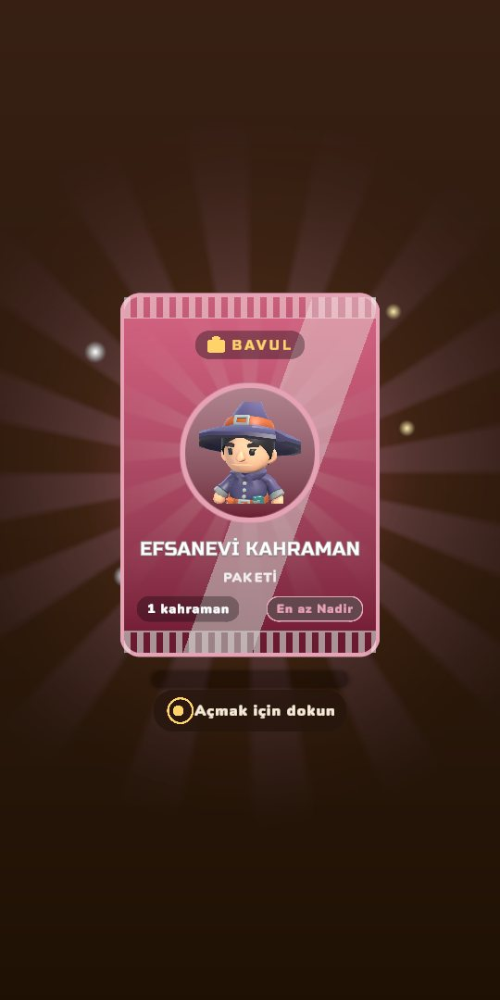
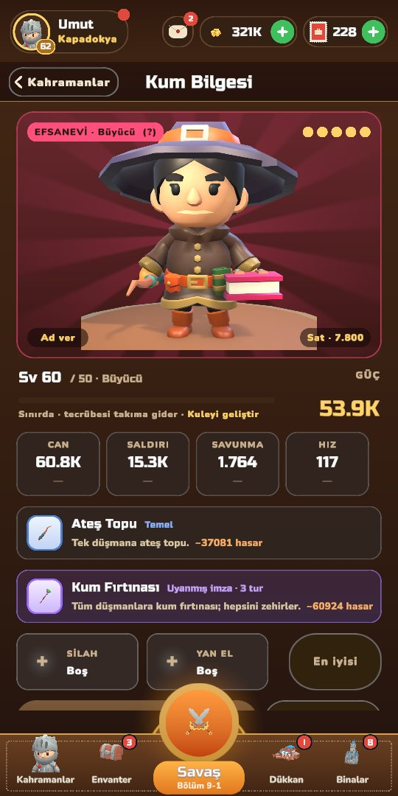

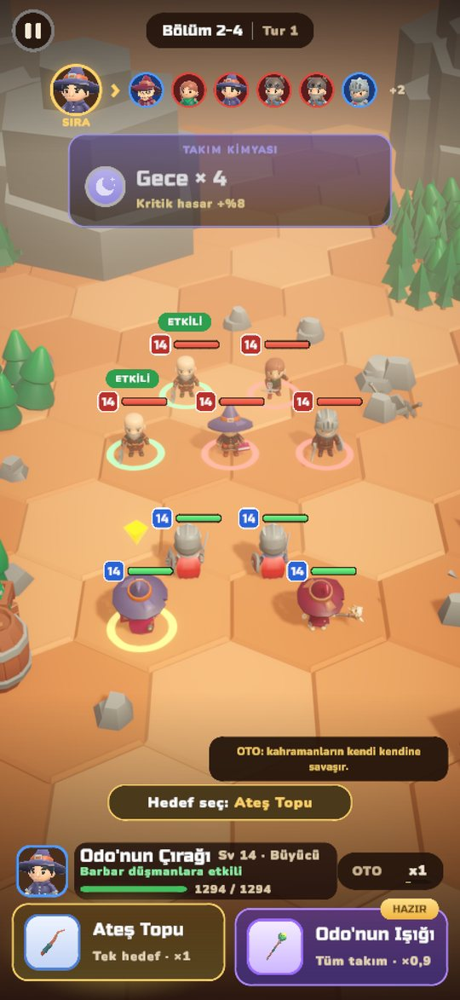
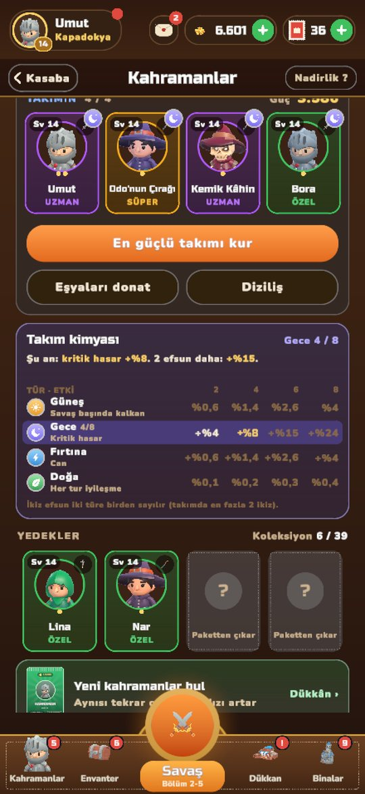
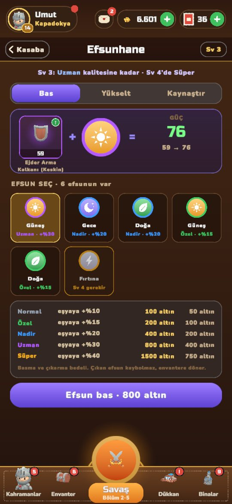
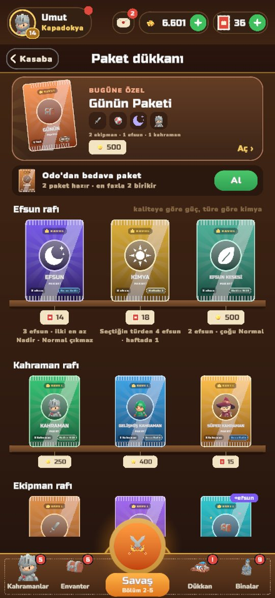
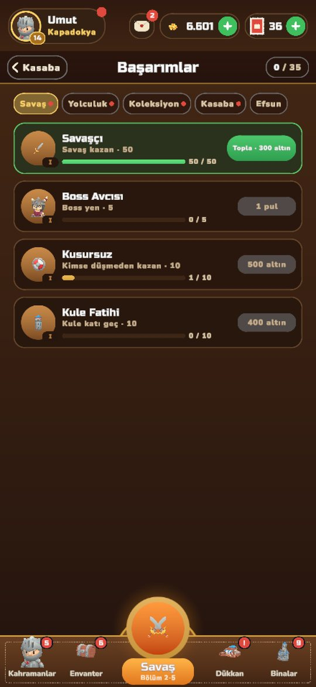
Bir fikrin mi var? bavulkasabasi@gmail.com adresine yaz; erken erişimde her görüş oyunu şekillendiriyor.